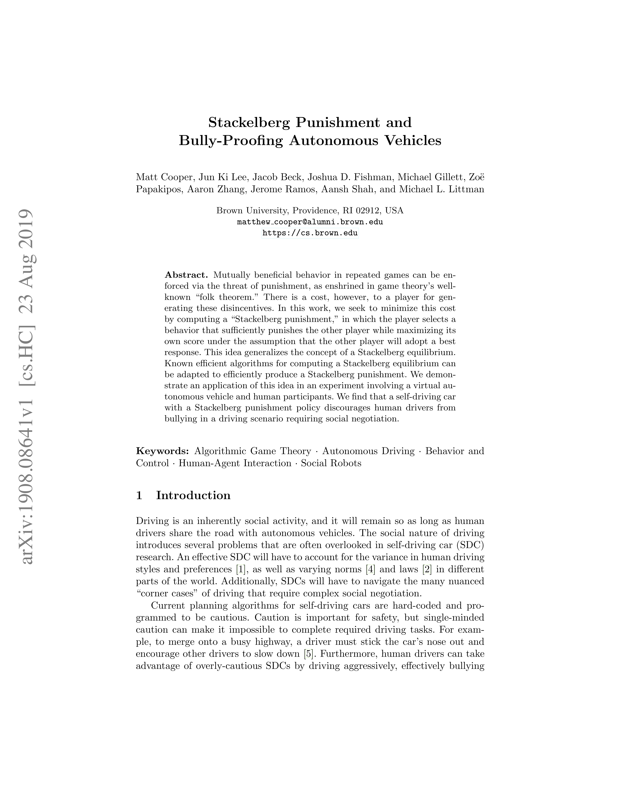

AMRL
Microsoft Research (First Author)
Wrote a paper, as the first author, published at ICLR 2020, as part of a pre-doc with MSR. The work demonstrates the sensitivity of modern memory approaches to policy stochasticity and noise in deep RL. We propose a solution framework that improves average return by 19% over a baseline with the same number of parameters, and by 9% over a DNC, with many more parameters.
Feedback was very positive. For example, Reviewer1 states:
"The experiments provided are good, and vary nicely between actual RL runs and theoretical analysis..."
Paper [ICLR]
Paper [Microsoft]
Publicity 1
Publicity 2
Note, OpenReview scores are now out of 8, and 6 is second greatest possible score.

Stackelberg Vehicles
SDC Lab (Research Member)
Worked in Brown's Self-Driving Car Lab on social interactions between humans and autonomous vehicles, calculating Stackelberg equilibria in game trees.

Human-Actor Human-Critic
Masters Research (Lead)
Research on learning from human demonstration and human feedback. We propose a framework and evaluate methods where feedback is interpreted as a direction in action space.

Collaboration in Deep MARL
PhD Proposal
Initial PhD proposal identifying issues in policy gradient methods for multi-agent RL with centralized training and decentralized execution, and proposing an information-theoretic approach.


Neural Mesh
Research Lead
Research into a biologically inspired RNN with spatial structure and conservation of energy.

CaRL
SDC Lab
Built a DQN for lane sharing, comparing agent performance to humans against varying opponent behaviors.
Food with Friends
Co-founder
iOS app for organizing meals with friends. Designed core systems including matching, messaging, and UI.